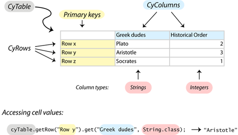
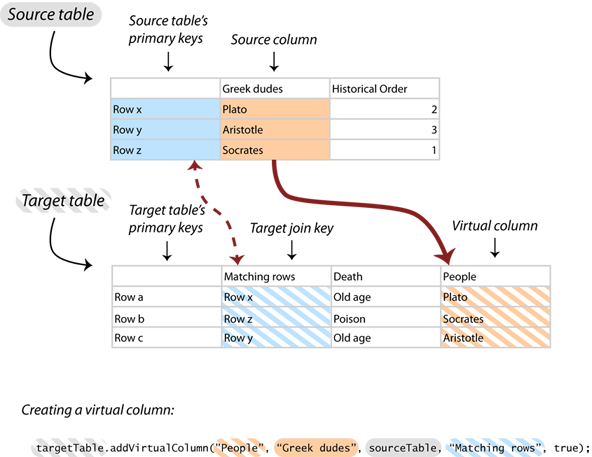
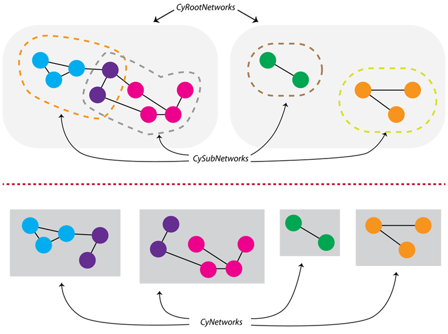
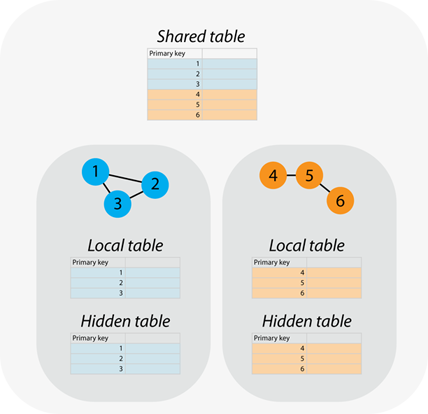

Package org.cytoscape.model
CyNetwork) and table data
(CyTable).
For the most part, the table and network data structures are independent. However, Cytoscape can link them together by matching table rows with network object identifiers. (Network object is a phrase that means nodes, edges, or networks.) In fact, Cytoscape stores its own internal network object metadata in tables using this linkage.
CyTable
CyTable is Cytoscape's data structure for tabular data. A CyTable
consists of columns (CyColumn) and rows (CyRow).
Columns have unique names and are typed. A column has a single type that is only defined when it is created. A column's type cannot be changed after it has been created. A column would have the string type if it stores text. Or it could have the integer type if it stores whole numbers. Besides strings and integers, columns can have other types, like booleans, floating point numbers, and lists.
App writers are free to create columns having names meaningful to the user in the context of the app (e.g., MeanTemp). To avoid having multiple apps using the same column name for different data, we created a community-maintained registry of columns created by apps. App writers should create column names prefixed by a short identifier unique to the app (e.g., jam_MeanTemp) and then add the column names to the registry spreadsheet.
You can get cell values in a table through a
CyRow. Each row has a primary key,
which is the row's unique identifier. No two rows in the
same table have the same primary key.
In each table, there is one column designated for storing the primary keys of each row.
The column for the primary key and its type are specified when the
table is created (see CyTableFactory).

Virtual Columns
You can share the contents of a column in one table with another table. These are called virtual columns. If cell values change in one virtual column, all other tables with that virtual column will change too. Virtual columns are used to share data between networks.
To add a virtual column, you will have to specify a couple things:
- Target table: the table into which you want to put the virtual column.
- Target column: the name of the virtual column you want in the target table.
- Source table: the table from which you want to get your virtual column's contents.
- Source column: the column in the source table from which you want to get your virtual column's contents.
- Target join key: the column in the target table whose cells match the source table's primary key column. This is used to match up the rows between the source and target tables.

Unique Identifiers (SUIDs)
Each CyTable has a unique identifier (SUID).
Network objects (CyNetworks, CyNodes, and
CyEdges)
also have SUIDs that uniquely identify them. They all inherit from the same
interface, CyIdentifiable.
SUIDs are similar to primary keys. SUIDs refer to network objects and CyTables,
whereas primary keys refer only to CyRows. You cannot specify SUIDs, and they
always have the type long. In contrast to SUIDs, you can control the values of
primary keys and its type.
SUIDs do not change in the same session. When the user saves the session and opens it
up again later, SUIDs will stay the same. If the user imports the same network in two different
sessions (or imports the same network twice), the SUIDs of network objects are not
guaranteed to be the same for the same network objects.
Creating a CyTable
Typically, you do not need to create CyTables yourself. Instead, use
tables created for each network object. However, you may need to create separate CyTables
for storing tabular data not directly related to network objects. To create a
CyTable, use CyTableFactory.
Before creating a CyTable, you need a CyTableFactory. Getting a
CyTableFactory depends on your type of app:
-
If your app is a simple app:
You have a class that inherits from
AbstractCySwingApporAbstractCyApp. You use one of these classes to getCyTableFactorywith theCyAppAdapter.getCyTableFactory()method. -
If your app is an OSGi bundle:
You can get a
CyTableFactoryby adding this to yourCyActivator(seeAbstractCyActivator):
whereCyTableFactory tableFactory = getService(bc, CyTableFactory.class);bcis the OSGiBundleContext.
CyNetwork
A network (CyNetwork) is a collection
of nodes (CyNode) and edges (CyEdge) that connect nodes together.
An edge is defined as a link between two nodes. This implies that
nodes must exist in the network for the edge to exist. CyNetworks support
multigraphs,
which means that two nodes can be connected together by more than one edge. CyNetworks do not support
hypergraphs, so edges cannot connect more than two nodes.
Nested Networks
A metanode is a node that has its own nested network inside of it. Metanodes establish a hierarchy of networks, where, in a higher level network, a node contains a nested network. That contained network could, in turn, have other metanodes that contain their own nested networks.CyNodes have network pointers
(see CyNode.getNetworkPointer()), which point to the node's nested network.
However, if you want to use nested networks, use the Groups API (org.cytoscape.group).
Root networks and subnetworks
Cytoscape has multiple root networks (CyRootNetwork). Each root network has multiple
subnetworks (CySubNetwork).
When you are using a CyNetwork, you're really using a
CySubNetwork.
Accessing root networks and subnetworks is hidden, because you usually do not need
to know about the root network.
Root networks and subnetworks are defined in this subpackage: org.cytoscape.model.subnetwork.
All nodes and edges exist in the root network.
The subnetwork merely refers to a subset of nodes and edges in the root network.
Nodes and edges are shared amongst all of the subnetworks of the same root network.
The purpose of this structure is so that you can share table data across networks.
You can set up shared tables so that data values in one subnetwork (say for a node) are shared with the
same node in another subnetwork. This is useful for importing a lot of data (e.g. large expression data sets).
You can also "save" nodes and edges for later use by keeping them in the root network and removing them
from the subnetwork. This is used extensively
in the CyGroup implementation, which builds a hierarchical structure onto Cytoscape's model.

When the first network is created by the CyNetworkFactory, a new
CyRootNetwork is first created. Each root network has a base network,
which is a CySubNetwork that contains everything in the root network. The base network is
is returned by CyNetworkFactory.createNetwork().
To create a new
CySubNetwork with the same CyNetwork's CyRootNetwork,
cast your CyNetwork to
CySubNetwork and call the CySubNetwork.getRootNetwork()
method:
CyRootNetwork rootNetwork = ((CySubNetwork)network).getRootNetwork(); CyRootNetwork also provides methods to create and add new subnetworks
(see CyRootNetwork.addSubNetwork()).
Tables associated with networks
Types of tables
For eachCyNetwork, Cytoscape has several types of CyTables
that store information for each type of network object.
A row in each of these tables contains data for a single network object.
Here are the types of tables:
-
Shared: data in this table is shared across
all networks with the same
CyRootNetworkand is visible to the user. - Local: data in this table is specific only to the network and is visible to the user.
- Hidden: data in this table is local to the network and is invisible to the user.

The default table
Most of the time, it is not important whether data is coming from local or shared tables. To make it easier to retrieve data, we establish default tables, which combine local tables and the shared tables together in one table. Default tables do not include hidden tables.When a new column is created in the default table, it is actually created in the shared table. This makes the column available to all networks in the same root. Use the private local table to create a column local to only one network.
Getting a table associated with a network
You can get a table associated with a network using theCyNetwork.getTable(java.lang.Class<? extends org.cytoscape.model.CyIdentifiable>, java.lang.String) method.
This method takes two parameters:
-
The first parameter specifies the type of network object you want:
If you want... Pass this in as the first parameter: network data CyNetwork.classnode data CyNode.classedge data CyEdge.class -
The second parameter specifies the type of table you want:
If you want... Pass this in as the second parameter: the shared table CyRootNetwork.SHARED_ATTRSthe local table CyNetwork.LOCAL_ATTRSthe hidden table CyNetwork.HIDDEN_ATTRSthe default table CyNetwork.DEFAULT_ATTRS
Getting the default table
CyNetwork has three shortcut methods for getting default tables for each type of network object:
| If you want the default table of... | Call this method: | Which is equivalent to: |
| network data |
CyNetwork.getDefaultNetworkTable()
|
CyNetwork.getTable(CyNetwork.class, CyNetwork.DEFAULT_ATTRS)
|
| node data |
CyNetwork.getDefaultNodeTable()
|
CyNetwork.getTable(CyNode.class, CyNetwork.DEFAULT_ATTRS)
|
| edge data |
CyNetwork.getDefaultEdgeTable()
|
CyNetwork.getTable(CyEdge.class, CyNetwork.DEFAULT_ATTRS)
|
Getting node and edge data
There are two ways of getting node and edge data from one of the tables listed above.
-
First, get the table as shown above. Then use
CyTable.getRow(java.lang.Object)method. Here's an example for getting the hidden attribtues of an edge:CyTable hiddenTable = network.getTable(CyEdge.class, CyNetwork.HIDDEN_ATTRS); CyRow edgeRow = hiddenTable.getRow(edge.getSUID());Here, you pass in the SUID when using
CyTable.getRow(java.lang.Object)method, not the edge itself. -
You can go straight into getting the row without having to get the table first with the
CyNetwork.getRow(org.cytoscape.model.CyIdentifiable, java.lang.String)method. Here's the same example but with using this method:CyRow edgeRow = cyNetwork.getRow(edge, CyNetwork.HIDDEN_ATTRS);Instead of passing in the SUID, you just pass in the edge itself.
Registration of Networks and Tables
When you first create a network or table, it is not shown to the user. In fact, Cytoscape is not even aware that you have just created a table or network. You must first register your new table or network withCyTableManager or CyNetworkManager,
respectively, if you want Cytoscape to be aware of the network or table and for it to
be shown to the user.
You do not have to register networks or tables. The benefit of unregistered networks
and tables is that you can use
CyNetwork and CyTable as flexible data structures. You can use them in your
own internal algorithms and storage for intermediary data, where you do not want the user
to see them.
The CyNetworkManager is the repository
for the information about registered networks. It provides mechanisms to add (CyNetworkManager.addNetwork(org.cytoscape.model.CyNetwork))
remove (CyNetworkManager.destroyNetwork(org.cytoscape.model.CyNetwork)) and inquire about networks
(CyNetworkManager.getNetwork(long), CyNetworkManager.getNetworkSet(), and
CyNetworkManager.networkExists(long)). Similarly, the CyTableManager
is the repository for the information about registered tables.
Events (org.cytoscape.model.events)
Apps can receive notifications that something has changed within the model. For example,
an App that provides the user with a list of available column names would want to update that list when
a new network was added. Two very common examples are to be notified when a network has been added, and
to be notified when the the user has selected something.
Cytoscape 3 event listeners use the OSGi service model rather than
the older "addXXXListener" used by previous versions of Cytoscape. To listen for the addition of a new network, for example,
the App writer would provide a class that implements NetworkAddedListener. This interface
provides a single method: NetworkAddedListener.handleEvent(org.cytoscape.model.events.NetworkAddedEvent), which takes as an argument
the NetworkAddedEvent, which is fired by the CyNetworkManager when
a new network is added (using CyNetworkManager.addNetwork(org.cytoscape.model.CyNetwork)). In order for this listener
to be called, it must be registered as an OSGi service:
-
If the App is an OSGi bundle, register the listener in the
CyActivatorclass. -
If the App is a Simple App, which has a class that inherits from
AbstractCyApp, then the App developer should use the following code:ServiceRegistrar serviceRegistrar = getCyServiceRegistrar(); // This comes from CyAppAdapter XYZListener myListener = ...; serviceRegistrar.registerService(myListener, XYZListener.class, new Properties());
Selection Event Example
Here is an example of listening to selection events. Selection in Cytoscape 3 is handled by the boolean columnCyNetwork.SELECTED in the CyNetwork.DEFAULT_ATTRS
table for a node or edge. To listen for selection,
you listen for changes in this column:
public class MyListener implements RowsSetListener {
// Probably want a CyNetwork or list of CyNetworks as arguments here?
public MyListener() {
}
public void handleEvent(RowsSetEvent e) {
Collection<RowSetRecord> rowsSet = e.getColumnRecords(CyNetwork.SELECTED);
for (RowSetRecord record: rowsSet) {
CyRow row = record.getRow(); // Get the row that was set
boolean selected = ((Boolean)record.getValue()).booleanValue(); // What it was set to
// Take appropriate action. For example, might want to get
// the node or edge that was selected (or unselected)
// CyNode node = network.getNode(row.get(CyIdentifiable.SUID, Long.class));
}
}
}
ServiceRegistrar serviceRegistrar = getCyServiceRegistrar(); // This comes from CyAppAdapter
NetworkAddedListener myListener = new MyListener();
serviceRegistrar.registerService(myListener, RowsSetListener.class, new Properties());
Some hints
Selected nodes and edges
A very common need is to get the list of selected nodes or edges. In Cytoscape, selection information is stored in theCyNetwork.LOCAL_ATTRS table for nodes and edges. As described above, this is
also available through the CyNetwork.DEFAULT_ATTRS table. Because getting the state of nodes and edges
is such a common equirement, Cytoscape provides some utility methods in CyTableUtil to make this easier, like
CyTableUtil.getEdgesInState(org.cytoscape.model.CyNetwork, java.lang.String, boolean) and
CyTableUtil.getNodesInState(org.cytoscape.model.CyNetwork, java.lang.String, boolean). These methods can be used to get the list of selected nodes or edges.
For example, to get the list of selected nodes:
List<CyNode> selectedNodes = CyTableUtil.getNodesInState(network, CyNetwork#SELECTED, true);
-
ClassDescriptionThis class describes a column in a CyTable.An interface for objects that require an explicit clean up at the end of their lifecycle.An object that represents an edge within a network of nodes (vertices) and edges.The Type enum is used by methods in
CyNetworkto restrict the edges that match a query.CyIdentifiable is an interface that indicates that the implementing object can be considered a key into a table.CyNetwork is the primary interface for representing a network (graph) data structure in Cytoscape.A singleton factory object used for instantiating CyNetwork objects.Basic access to networks and view in an instance of Cytoscape.Provides access to all network-table relationships.An object that represents a node (vertex) within a network of nodes and edges.This interface represents one row in a CyTable.A simple representation of a table object consisting of rows and columns.Mutability of the table specifies whether or not it is able to be deleted..An interface describing a factory used for creatingCyTableobjects.A description of the initial size of the table.A singleton object for managing registeredCyTables.A snapshot of information about a relationship shared between a CyTable instance and an associated CyNetworks.A collection of state-less, static utility methods provided to simplify querying of table objects.The SavePolicy of an object specifies whether or not it will be saved.This singleton class returns unique, positive SUID (session unique ID) values.Information object for columns that stores extra Virtual Column information if applicable.